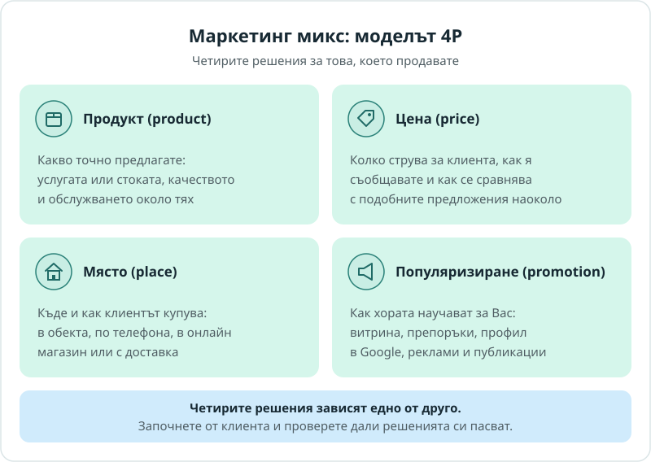
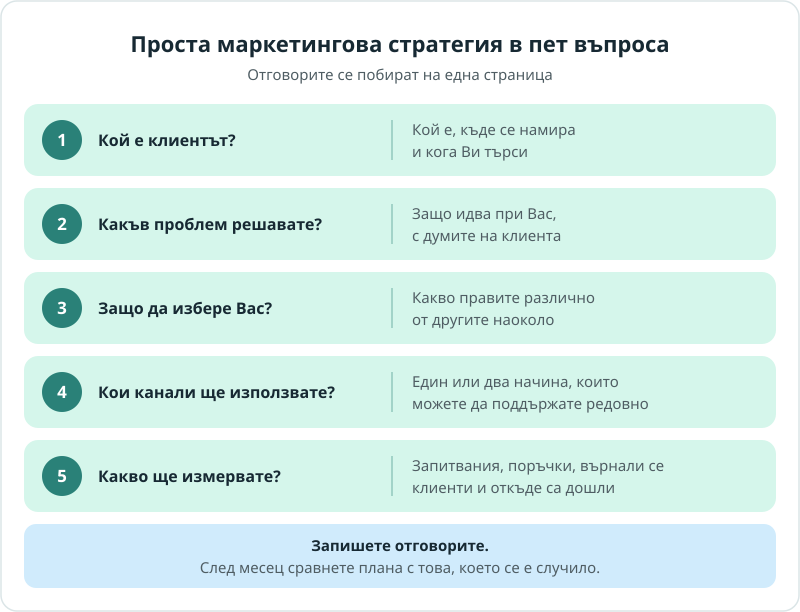

Съвети
Какво е маркетинг и как да го прави малкият бизнес
Маркетингът е цялата работа, с която един бизнес разбира кои са клиентите му, какво им предлага, на каква цена, къде им го продава и как им съобщава за него. Рекламата е само една част от тази работа. За малкия бизнес маркетингът започва с ясен план и с редовни малки действия, които собственикът може да проследи сам.
Обновено
Какво означава маркетинг с прости думи?
Маркетингът е начинът, по който свързвате това, което правите, с хората, на които то е нужно. Той започва още преди първата реклама: с въпроса кой е клиентът, какъв проблем има и защо би избрал точно Вас.
Рекламата и продажбите са части от маркетинга. Рекламата помага на хората да научат за Вас, а продажбата е моментът, в който клиентът решава да купи. Маркетингът подрежда и двете, така че рекламата да стига до хората, на които услугата е полезна, а клиентът да чува ясно предложение.
В един измислен пример малка пекарна забелязва, че сутрин клиентите питат за кафе за вкъщи. Тя започва да предлага кафе и закуска заедно и го изписва на витрината и в профила си. Това също е маркетинг: пекарната е разбрала клиента, променила е предложението и му е съобщила за него.
Какво представлява моделът 4P?
Маркетинг микс е името на четирите решения, които всеки бизнес взема за това, което продава. На английски думите започват с буквата P, затова моделът често се нарича 4P.

- Продукт (product). Какво точно предлагате: услугата или стоката, качеството и обслужването около тях.
- Цена (price). Колко струва за клиента, как я съобщавате и как се сравнява с подобните предложения наоколо.
- Място (place). Къде и как клиентът купува: в обекта, по телефона, в онлайн магазин или с доставка.
- Популяризиране (promotion). Как хората научават за Вас: витрина, препоръки, профил в Google, реклами и публикации.
Четирите решения зависят едно от друго. По-високата цена например изисква продуктът и обслужването да я оправдават в очите на клиента. Затова е добре да започнете от клиента и после да проверите дали четирите решения си пасват.
Как да направите проста стратегия?
Маркетинговата стратегия за малък бизнес може да се побере на една страница. Достатъчно е да отговорите писмено на пет въпроса и да се връщате към тях, когато решавате нещо ново.

- Кой е клиентът? Опишете един типичен клиент: кой е, къде се намира и кога Ви търси.
- Какъв проблем решавате? Запишете с думите на клиента защо идва при Вас, например за бързо обслужване, доставка или съвет.
- Защо да избере Вас? Посочете какво правите различно от другите наоколо, например работно време, специализация или начин на обслужване.
- Кои канали ще използвате? Изберете един или два начина да стигнете до клиента, които можете да поддържате редовно.
- Какво ще измервате? Решете по какво ще разберете дали работи: запитвания, поръчки или върнали се клиенти, и откъде са дошли.
Стратегията не е нужно да е съвършена от първия път. Важно е да е записана, за да можете след месец да сравните плана с това, което се е случило.
Кои канали да изберете?
Каналът е пътят, по който клиентът научава за Вас или се свързва с Вас. За малък бизнес обикновено е по-добре да поддържате добре един или два канала, отколкото да присъствате навсякъде за кратко.
Изборът зависи от това, къде клиентите Ви вече търсят. Ако търсят услугата в търсачката в момента, в който им трябва, платената реклама може да Ви покаже точно тогава. Как работи рекламата, която планира и следи маркетинг специалист, е описано на отделна страница. Ако клиентите Ви избират по снимки и препоръки, по-голямо значение имат редовните публикации по график и визиите всеки месец.
За местен бизнес не пропускайте и каналите извън интернет: витрината, табелата, разговора на касата и препоръките от редовни клиенти.
Как изглежда един обикновен месец?
Редовните малки действия се проследяват по-лесно от една голяма кампания веднъж в годината. Една проста месечна рутина може да изглежда така:
- В началото на месеца изберете една цел, например повече запитвания за определена услуга или повече клиенти в тихите дни от седмицата.
- Подгответе съдържанието предварително: публикациите, предложението за сезона и текста на рекламата, ако ще има такава.
- Записвайте откъде идва всяко запитване: от препоръка, от търсачката, от реклама или от публикация.
- В края на месеца сравнете резултата с целта и решете какво да продължите и какво да промените.
Ако маркетингът се води от специалист, месечният му отчет трябва да отговаря на същите въпроси с конкретни числа.
Кои грешки да избегнете?
- Реклама без ясно предложение. Хората виждат рекламата, но не разбират какво точно получават и защо да се обадят.
- Всички канали наведнъж. Профили, които остават без нови публикации със седмици, могат да създадат впечатление, че бизнесът не работи.
- Решения без данни. Без запис откъде идват клиентите е трудно да разберете кое работи и кое само струва пари.
- Цена, която никой не обяснява. Когато клиентът не разбира какво включва цената, той сравнява само сумата.
- Промяна на всичко всеки месец. Когато сменяте посланието и каналите твърде често, не остава време да видите кое е дало резултат.
Откъде да започнете, ако искате помощ?
Ако нямате време да водите маркетинга сами, маркетинг специалистът на Xtra AI, който е реален човек, планира, пуска и следи рекламата и маркетинга. Той Ви отчита резултатите с числа. Не обещаваме конкретен брой запитвания или продажби.
Първата стъпка е безплатната диагностика, където избирате вида на бизнеса си и отбелязвате проблемите, които познавате. След нея следва 30-минутен разговор, а после подготвяме оферта с приоритизирани решения и ясни еднократни цени. Срокът зависи от решението и го посочваме в офертата.
Диагностиката не Ви обвързва с нищо и работим без дългосрочни договори.
Често задавани въпроси
С какво маркетингът се различава от рекламата?
Рекламата е един от начините да съобщите на хората за себе си. Маркетингът включва и решенията преди нея: за кого е предложението, какво включва, колко струва и къде се купува.
Какво означава 4P?
4P е краткото име на маркетинг микса: продукт, цена, място и популяризиране (product, price, place, promotion). Това са четирите решения, които бизнесът взема за това, което продава.
Трябва ли малкият бизнес да има маркетингова стратегия?
Да, но тя може да е кратка. Достатъчно е да запишете кой е клиентът, какъв проблем решавате, защо да изберат Вас, кои канали ползвате и как ще измервате резултата.
Колко време на месец отнема маркетингът?
Зависи от броя на каналите и от това, колко съдържание подготвяте. Затова е по-лесно да започнете с един или два канала и кратък преглед в края на всеки месец.
Колко струва маркетинг специалист при Xtra AI?
Цената зависи от това, какво ще поеме специалистът, и я посочваме в офертата след безплатната диагностика. Работим без дългосрочни договори.
Свързани услуги
- Реклама в GoogleКампании в Google Ads, които маркетинг специалист планира, пуска и следи, като Ви показва какво връща всяко вложено евро.Научете повече
- Социални мрежи и криейтивиПубликации по график след Вашето одобрение, брандирани криейтиви всеки месец и актуален Google профил.Научете повече
- Безплатна диагностикаОтбележете ситуациите, които познавате от своя бизнес, и вижте ориентировъчно колко часа седмично отнемат.Научете повече
Първата стъпка е безплатна
Диагностиката не Ви обвързва с нищо. Показваме Ви точно какво можем да поправим и колко ще струва.